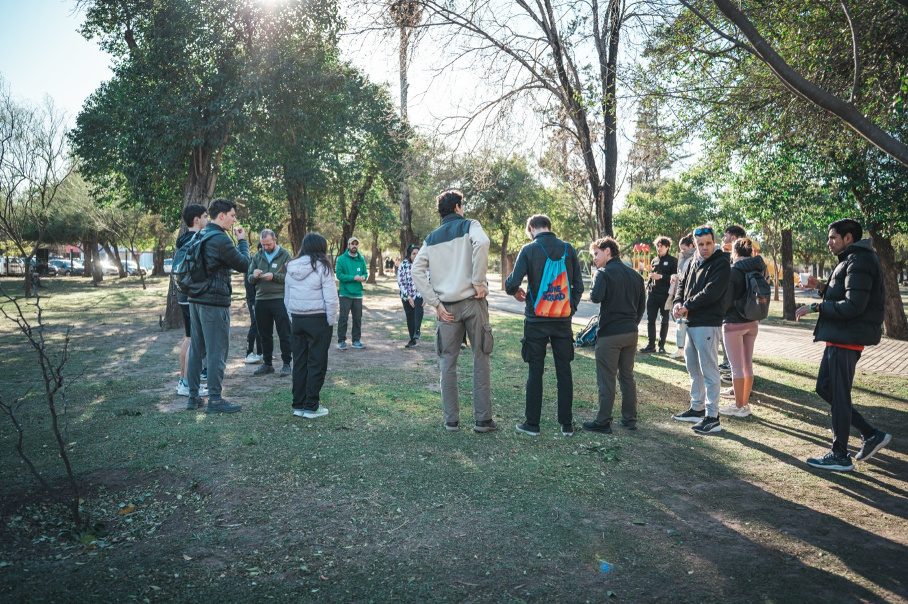
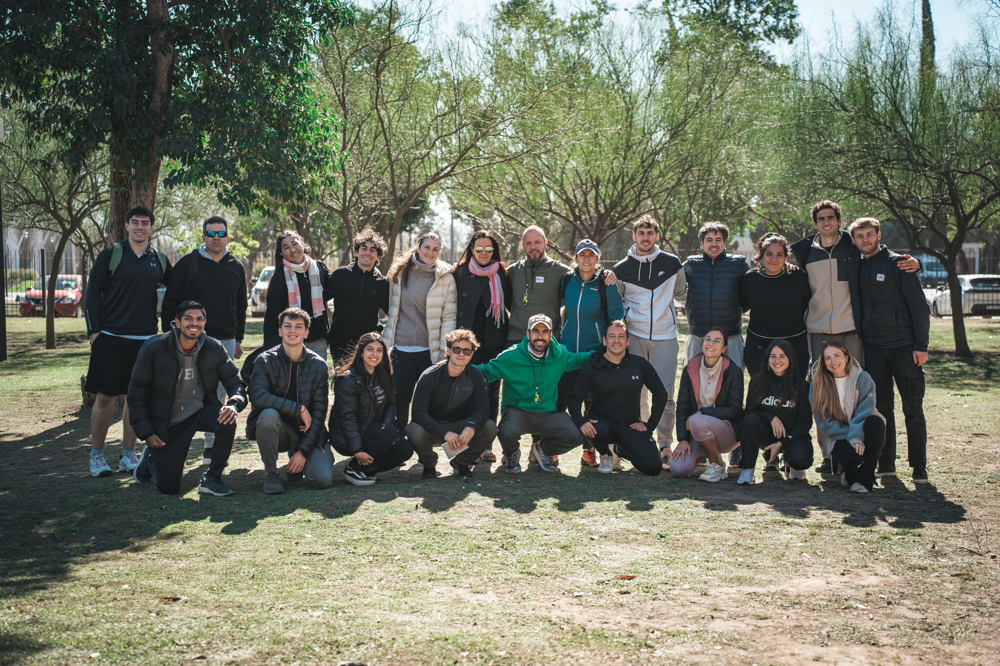
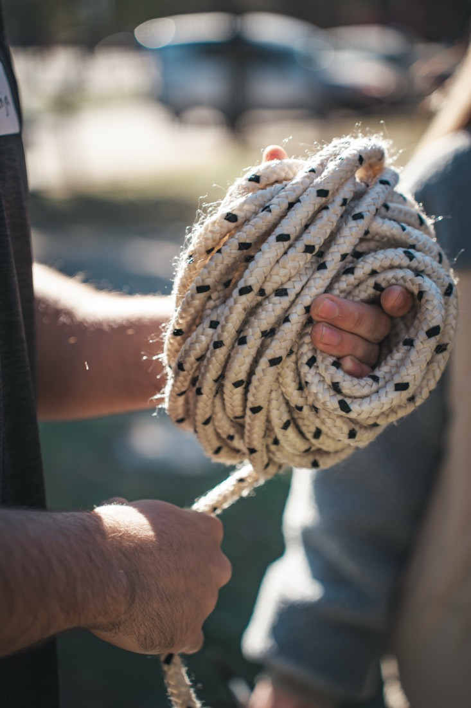
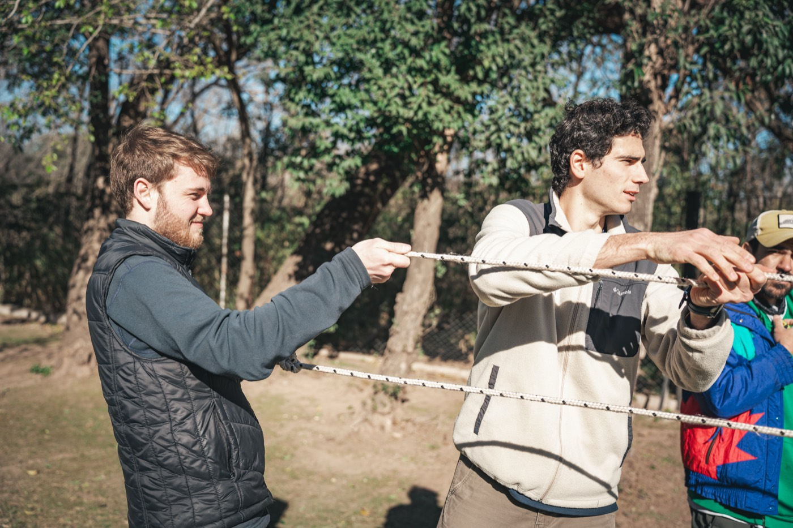
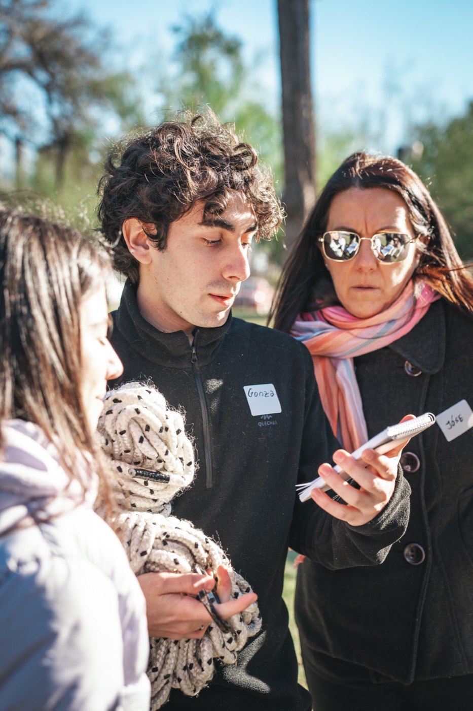
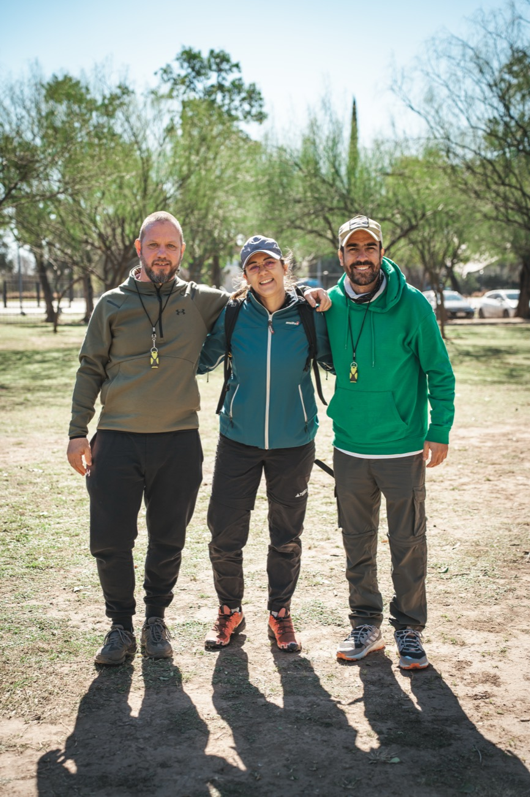

TRAMA / Outdoor
Desarrollo de Equipos
Experiencias outdoor para practicar y fortalecer habilidades de trabajo en equipo.
ComunicaciónCoordinaciónLiderazgoDecisiones

Ponemos en acción las habilidades que hacen funcionar a un equipo: comunicación, coordinación, liderazgo y decisiones.

Un equipo no funciona solo por las capacidades de cada persona, sino por cómo se conectan, comunican, coordinan y deciden juntos.
Creamos experiencias para poner esas relaciones en acción y convertirlas en aprendizaje.
El equipo enfrenta desafíos reales: decide, se organiza y avanza hacia un objetivo común. Después facilitamos una reflexión para transformar esa experiencia en aprendizaje que vuelve al trabajo cotidiano.
Una situación concreta que exige al equipo.
El equipo se organiza, decide y avanza.
Observamos juntos qué pasó y por qué.
Prácticas que vuelven al trabajo cotidiano.
Compartir información, escuchar y construir entendimiento.
Organizar personas, roles y recursos para avanzar.
Movilizar al equipo, asumir responsabilidades y habilitar a otros.
Decidir con distintas perspectivas, restricciones e incertidumbre.

Experiencias outdoor para practicar y fortalecer habilidades de trabajo en equipo.

Jornadas de integración, kick-off y team building diseñadas para combinar una buena experiencia con propósito y aprendizaje.

Espacios para trabajar sobre desafíos reales del equipo y avanzar hacia resultados concretos.
Un buen momento en común, pero sin una intención de aprendizaje explícita.
Contenido valioso, pero que muchas veces no se traduce en cómo el equipo actúa.
Observar comportamientos y aprender de la experiencia. Del hacer al aprendizaje que se traslada.
Cada propuesta puede diseñarse de acuerdo con el momento, las características y los objetivos del equipo.
Conversamos sobre el equipo y el desafío.
Seleccionamos y adaptamos la experiencia.
El equipo enfrenta desafíos y situaciones concretas.
Facilitamos una conversación sobre lo ocurrido y sus aprendizajes.
Identificamos prácticas aplicables al trabajo cotidiano.
Ediciones abiertas para profesionales, estudiantes y emprendedores que quieren desarrollar sus habilidades de equipo. Un espacio de encuentro y aprendizaje entre perfiles diversos.
Cada edición trabaja un propósito distinto:

Verme reflejada en ciertas acciones para llevarlas a diferentes ámbitos de mi vida.Participante · experiencia abierta
Me gustó trabajar y conocer gente de ámbitos diversos. Espectacular la diversidad de personas involucradas, desde las diferencias de edad hasta los perfiles profesionales. La ronda de reflexiones al final me pareció indispensable para obtener distintas opiniones.Participante · experiencia abierta
Me encantó conocer personas nuevas y poder tomar herramientas de primera mano, no con conceptos teóricos.Participante · experiencia abierta
Salir un poco de los círculos en los que nos movemos, darnos cuenta de qué lugar ocupamos y cómo nos relacionamos con el resto.Participante · experiencia abierta
Encontrarme en un lugar diferente y desafiarme a resolver cosas fuera de lo habitual. Aprender cómo llevar lo aprendido a la vida cotidiana.Participante · experiencia abierta

Contanos qué está pasando y diseñamos una experiencia acorde al desafío.